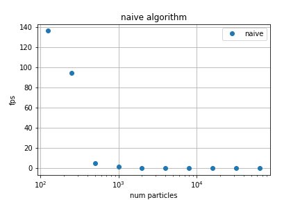
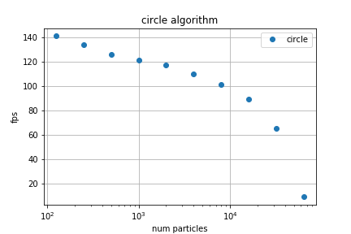
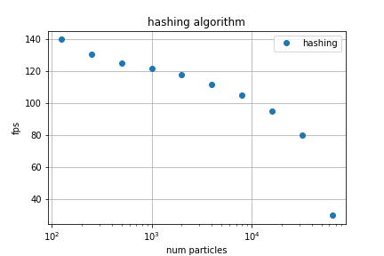
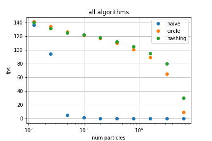

One unforseen challenge in the project was initializing the galaxy. While we may be able to simulate the particle's position and velocity in the next time step given the state of the galaxy in the current timestep, we need to give all the particles initial positions and velocities. In addition, although the particles don't change size, color, or mass in this version of the simulator, they still need to be initialized to some value. The challenge is to do this realistically so that it resembles a galaxy initially. The realism afterward is then left to the simulation time-stepping.
We realized that the position of any single particle is not as important as the overall distribution of the particles. Therefore, we used a reference galaxy image as a reference for the distribution of particles from which we sampled positions. Ideally, this would be a decently high resolution image of a galaxy from a bird's eye view. Using a Python script, we segment the image into tiles and compute the average luminance of the tile, which we take as the relative density of particles in that area of the galaxy. We then normlize these densities and use them to describe a discretized probability distribution (think: buckets).
For each particle, we sample two random variables and use the inversion method similar to what was used in importance sampling in Project 3-2 to find the corresponding tile of the original image that this particle should be spawned in. Wihtin that tile, we uniformly sample the position of the particle (indendently in each axis). The method was inspired by the importance sampling used in environment mapping section. Again, the distribution is based off the relative luminance of the different tiles. Critical in this method is the assumption that luminance is a good estimate of the particle density of that section of the galaxy. This is works conveniently for our simulation task since in space, everything of visual significance is either emitting or reflecting light. We note that this assumption does not work well in many other types of simulation, including space simulation requiring a high degree of accuracy, as there are many things that don't emit or reflect light (eg. black holes, dark matter, etc) that would greatly affect the gravity simulations.
We also note that with more buckets, the initial galaxy looks more realistic, as it can capture a lot of the emtpy spaces between, say, different arms of the galaxy. For regular images, using each pixel as a bucket is very reasonable, since at such scales, even a single pixel is representing a large part of the galaxy. As the number of buckets decreases (and thus the size of each bucket increases), the buckets become more conspicuous in the final simulation, as you can see the boundaries of each bucket (particles seem to form a loose rectangular prism).
Another trick we used to get a more realistic galaxy is to increase the contrast of the galaxy image. While that makes the reference image look less aesthetically pleasing, it helps push the resulting distribution be more pronounced, encouraging particles to be spawned near the center and arms of the galaxy. The "bushiness" of the galaxy is not greatly affected since the randomness within a tile adds "bushiness".
We employed a similar approach to assign colors to each particle. Using the same image tiles as above, we calculated the color statistics on each tile. Specifically, we calculated the mean and standard deviation of the hue, saturation, and value values in each tile. When a particle was initialized in a specific tile, the hue, saturation and value of its color would be sampled from a gaussian distribution with the mean and standard deviation of that tile.
The main problem we aimed to tackle with this project was how to simulate real gravitational N-Body dynamics systems while still keeping a high framerate and particle count. This became a task to find a healthy balance between performance optimizations and loss of realism. We implemented and compared 3 different systems to simulate the physics of our galaxy. To look at the performace of our different systems, we compared the framerate of our simulation to the number of particles being simulated on the CPU.
Our first method to simulate the N-Body physics of our galaxy was to use a 1:1 implementation of real life physics. Essentially, each particle in the system is given a force equal to the sum of all gravitational forces between it and every other particle in the system. This method, while the most physically accurate, is the slowest, as each call to update particle positions takes O(n^2) operations in terms the number of simulated particles.

Another physics method we implemented in simulating N-Body dynamics in our galaxy is the circular orbit approximation method. Each particle is given a force equivalent to the total mass of the system being concentrated at the center of mass of the galaxy. This method is constant time per particle update, so the simulation update call is O(n) overall, and allows for the greatest number of particles to be simulated on the CPU. The physical accuracy of this system decreases the further towards the center of the galaxy, as particles closer to the center are given a force as if all other mass was inside of their orbit, even though there are many particles further away in orbit than the centered particles are. As a result, particles which are far away from the galactic center of mass have pretty realistic behavior, while particles in the center may move erratically at times.

In the hasing method, we used a spatial hash, inspired by Project 4's self-c0llision method. We hash each of the objects into buckets that enclose spatially exclusive spaces. While doing so, we keep track of a bucket's total mass and center of mass. During the force updatge section, the total force on each particle consists of two sums. First, the naive method is used between the particle and all other particles in its bucket. Then the force between the particle and every other bucket (except the one its in) is applied to it. Essentially, all particles in another bucket are assumed to be at the position of the center of that other bucket. This is based on the assumption that forces from particles in another bucket seem to come from the same general direction, so it's not too far off to assume that they all come from the center of mass in that bucket, in which case, we can just use the total mass in that bucket to represent all the particles in the bucket.
However, even this method in its naive form is not fast enough to handle a large number of particles at a high frame rate. As with most speed-ups in this kind of real time simulation, we found ways to trade-off the accuracy of the simulation. The largest source of complexity in the method is the total force computation for each particle. The naive method is used between particles of a bucket, which leads to a complexity of O(N^2), where N is the average number of particles in a bucket. Then the naive method is performewd between each particle of the bucket and every other bucket other than its own, leading to a complexity of O(MN), where M is the number of buckets. The overall compelxity of this method is O(N^2 + MN). The other two main tasks were spatial hashing and doing velocity/position updates, both of which have an overall complexity of O(MN). We did not explore a way to reduce this complexity other than to tune the size of the buckets. Instead, we split the work over different threads. Specifically, we only did velocity/position updates, which is linear to the number of particles, in the main render thread. That way the render thread is not held up and the simulation (both the camera and particle movements) are smooth. One thread updates the spatial hash continuously, and another two threads share the task of updating the total forces on each particle.
the main source of physical error in this threaded method is the forced independency of these problems. The force calculation threads may or may not be using an outdated spatial hash, so that particles that are in the same bucket actually have positions that might not belong to that bucket. Therefore, the fine-grain calculation may be unecessarily performed on partical pairs that should be in different buckets while neglecting particle pairs that should be in the same bucket in the current iteration but aren't since the spatial hash hasn't updated yet. Additionally, If the force updates don't happen as fast as the render cycle, the render thread may be using old forces to update the velocity. In our experience, the hashing task is much faster than the force update task, which is the bottleneck. Regardless, the simulation is no longer laggy due to the fact that the rate of force updates does not affect the rate of position/velocity updates.
Inspiried by the technique of Verlet integration, we constrained that particles be within certain bounds of the galaxy. If they drift out of those bounds, they are reset to a randomly sampled position within the galaxy, using the same importance sampling in galaxy initialization.

Here are the results for all three methods put together:

The circle approximation performed roughly as well as the spatial hashing approach, and both of these do much better than the naive algorithm as expected. However, since we are conceding some physical accuracy for both methods compared to the naive, it is important to look at the drawbacks of this performance gain. With spatial hashing, we lose the fine details in the direction of forces since particle forces are grouped into buckets rather than each having individual directions. With circular approximation, particles towards the center have less realistic orbiting behavior. These visual errata are small, and are not nearly as noticable as the steep framerate drop that occurs when using the naive force calculations, so the other methods are preferrable for such a large simulation.